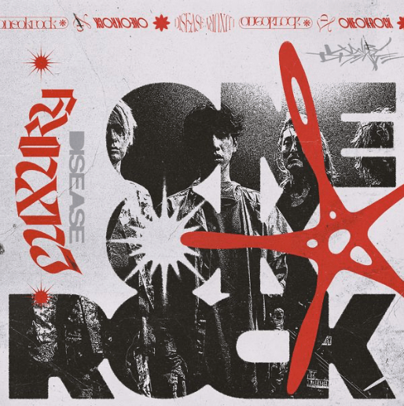

MUSIC
10th Album
Luxury Disease

01 ; Save Yourself *
02 ; Neon
03 ; Vandalize *
04 ; When They Turn the Lights On
05 ; Let Me Let You Go *
06 ; So Far Gone
07 ; Prove *
08 ; Mad World *
09 ; Free Them feat. Teddy Swims
10 ; Renegades *
11 ; Outta Sight
12 ; Your Tears are Mine
13 ; Wonder *
14 ; Broken Heart of Gold **
15 ; Gravity feat. 藤原聡 (Official髭男dism) **
*は輸入盤、International Versionとは異なったヴァージョン
**は国内盤のみ収録
2022年9月9日リリース
予約受付中→https://OOR.lnk.to/LDJAW
02 ; Neon
03 ; Vandalize *
04 ; When They Turn the Lights On
05 ; Let Me Let You Go *
06 ; So Far Gone
07 ; Prove *
08 ; Mad World *
09 ; Free Them feat. Teddy Swims
10 ; Renegades *
11 ; Outta Sight
12 ; Your Tears are Mine
13 ; Wonder *
14 ; Broken Heart of Gold **
15 ; Gravity feat. 藤原聡 (Official髭男dism) **
*は輸入盤、International Versionとは異なったヴァージョン
**は国内盤のみ収録
2022年9月9日リリース
予約受付中→https://OOR.lnk.to/LDJAW
2022.09.09 release